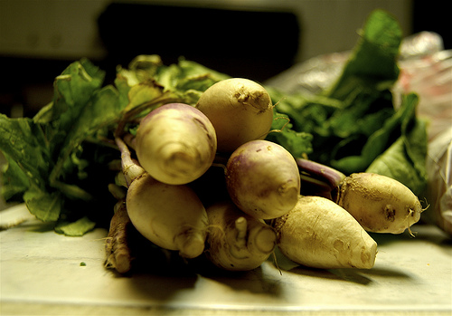
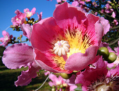

La racacha es el llamado pan de los incas. Esta raíz es nueve veces más rica en calcio que la papa y tiene dos veces más hierro. Asimismo, la racacha tiene altas concentraciones de magnesio natural. La racacha es rica en fósforo y tiene un almidón fino de fácil digestión. 
Deiter Linares, promotor del estilo de vida naturista y gerente de Perú Natural, recomienda la harina de racacha en caso de osteoporosis, anemia o deficiencia en magnesio. La harina de racacha se puede consumir en sopas o mazamorras, de dos a tres cucharadas diarias. En las sopas, es necesario que la racacha dé un hervor de tres minutos. En Brasil se vende como comida para bebés, ancianos o personas con estómago delicado. En Cajamarca, Perú, la racacha se combina con queso y se come en el desayuno. El nombre peruano de esta raíz es racacha, en Colombia se conoce como arracacha, lo que ha generado confusión.
Deiter recomienda consumir racacha para incentivar su consumo y evitar su extinción. El consumo de la racacha estimula el cultivo de esta raíz y beneficia a los campesinos. En Brasil, por ejemplo, la racacha ha sido sometida a un mejoramiento genético y su cultivo intensivo ha hecho que Brasil se convierta en un importante productor mundial y el mayor proveedor de sus harinas, que se usan en la fabricación de alimentos para bebé.
La racacha es una raíz de fácil digestibilidad, ya que tiene un almidón muy fino, alto contenido de calcio y vitamina A y niveles adecuados de niacina, ácido ascórbico y fósforo. Otros nombres comunes de la racacha son: apio criollo, racacha, virraca, zanahoria blanca o mandioquinha salsa. Su nombre científico es Arracacia xanthorriza. La racacha es una planta alimenticia originaria de los Andes y cultivada actualmente en Colombia, Brasil, Perú, Bolivia, Venezuela y Ecuador entre los 600 y 3200 msnm. La racacha pertenece a la familia de las apiáceas, al igual que la zanahoria (Daucus carota) y el apio (Apium graveolens). En Ecuador la racacha se conoce como zanahoria blanca y es altamente usada para los primeros alimentos de los infantes. 
La planta de la racacha tiene un tronco cilíndrico corto con numerosos brotes en la parte superior de donde parten las hojas de pecíolos largos. La flor de racacha es de color púrpura o morado. La parte comestible de la racacha es la raíz que es similar a una zanahoria engrosada. La racacha puede ser de color blanco, amarillo o morado según la variedad. Deiter Linares encontró tipos de
{kind=link}